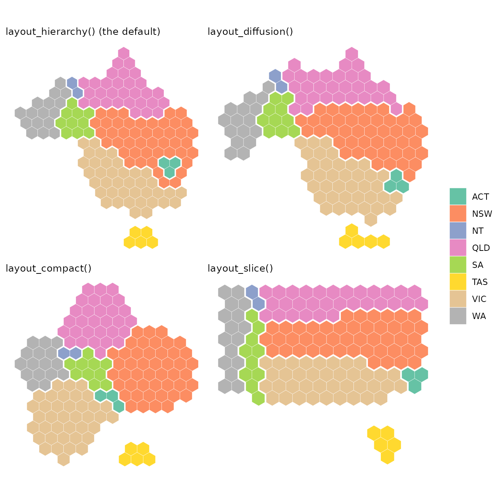
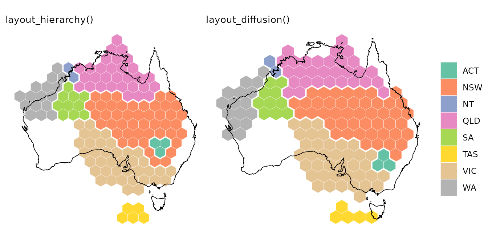
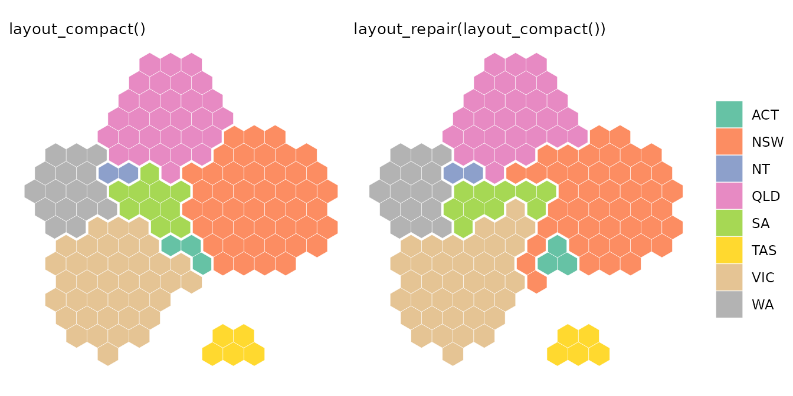
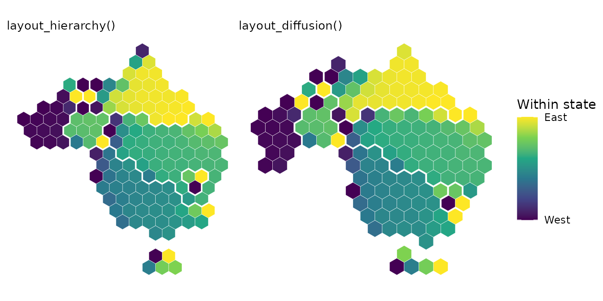

When regions are grouped, such as electoral divisions into states,
hexmap() keeps the hexagons of each group together. Groups
rarely need the same space in hexagons as they cover on the map: New
South Wales has 46 of the 150 divisions at the 2025 Australian federal
election, but only a tenth of the land, while Western Australia has a
third of the land but only 16 divisions. The map has to be distorted to
fit, and layout chooses how.
Each layout keeps some things and gives up others:
- the outline of the whole map, such as the coastline of Australia;
- the shape of each group, such as the triangle of Tasmania or the long coast of Queensland;
- the position of each group, so that each group is in the right direction from the others and touches the same groups as on the map;
- the position of regions within each group, so that a state’s northern divisions are at the top of its hexagons, and its city divisions stay together.
The examples use the 2025 election results included in hexmap, in the Australian Albers equal-area projection:
election <- st_transform(aus_election_2025, 3577)The layouts
hierarchy <- hexmap(election, group = state)
diffusion <- hexmap(election, group = state, layout = layout_diffusion())
compact <- hexmap(election, group = state, layout = layout_compact())
slice <- hexmap(election, group = state, layout = layout_slice())
-
layout_hierarchy(), the default, places the groups first and then the regions within each group. Each group keeps its own shape, in the right direction from its neighbours, at the expense of the outline of the whole map. It is the slowest layout. -
layout_diffusion()stretches and squeezes the whole map, like a rubber sheet, until each group has the space it needs. It keeps more of the outline of the map thanlayout_hierarchy(), but bends the shapes of groups more, and places regions within groups less accurately. It is usually faster thanlayout_hierarchy(), by up to twice. -
layout_compact()draws each group as a round block of hexagons, packed together like a hand drawn election map. Blocks are easy to compare, but the shape of each group and the outline of the map are lost, and neighbouring blocks don’t always touch where the groups do. It is the fastest layout. -
layout_slice()cuts a rectangle into a piece for each group, so groups are separated by straight lines. Every landmass becomes a rectangle, losing features such as Cape York and the Great Australian Bight, and groups lose their shapes as much as in the compact layout. It is nearly as fast aslayout_compact().
Outline and shape
layout_diffusion() keeps the outline of the map, while
layout_hierarchy() keeps the shape of each group. Outlining
Australia, scaled to the area of the hexagons, shows the difference: the
diffusion layout fills more of the coastline, while the hierarchy layout
lets the outline go so that each state looks like itself. Queensland,
for instance, keeps Cape York as its northern tip in the hierarchy
layout, but is stretched into a band along the top of the map in the
diffusion layout.

To keep even more of the outline,
layout_diffusion(cartogram = 0) squeezes the groups into
the outline of the map as it is, at the cost of bending their shapes
further.
Position of each group
Both layout_hierarchy() and
layout_diffusion() keep each group in the right direction
from the others, with layout_hierarchy() slightly more
accurate on most maps. The compact layout is the least accurate, as
round blocks have to be pushed apart to fit together. They differ in
which groups touch. On this map, layout_hierarchy() makes
every state touch exactly the states it borders. The diffusion layout
lets the ACT touch Victoria, and the compact layout gets five pairs of
states wrong: the ACT touches South Australia and Victoria, Western
Australia touches Queensland and Victoria, and New South Wales and
Victoria don’t touch.
layout_repair() takes any layout and swaps hexagons
across the borders between groups until groups touch as they do on the
map. It fixes the ACT in the diffusion layout, and three of the five
mistakes in the compact layout:
repaired <- hexmap(election, group = state,
layout = layout_repair(layout_compact()))
Repairing only swaps hexagons along the borders between groups,
keeping the hexagons of the layout, so it can’t move whole blocks:
Western Australia still reaches across to touch Queensland and Victoria.
layout_hierarchy() makes the same swaps as it places the
groups, so it doesn’t need repairing.
Position of regions within groups
layout_hierarchy() places the regions of each group by
fitting the group’s shape on the map to the shape of its hexagons, so on
most maps, regions keep their order within each group better than with
the other layouts. Colouring each division by how far east it is within
its state shows the order. Both layouts keep Perth in the west of
Western Australia and Brisbane in the east of Queensland, but the
hierarchy layout keeps more of the outback in Queensland’s west.

To measure the order, compare the rank of each division from west to east (and from south to north) on the map with its rank in the hexagons of its state. A rank correlation of 1 means that every division is in the same order:
order_kept <- function(hex) {
map <- st_coordinates(st_point_on_surface(st_geometry(election)))
tile <- st_coordinates(st_centroid(st_geometry(hex)))
states <- split(seq_len(nrow(map)), election$state)
states <- states[lengths(states) >= 4]
mean(sapply(states, function(i) {
cor(map[i, ], tile[i, ], method = "spearman")[c(1, 4)]
}))
}
sapply(list(hierarchy = hierarchy, diffusion = diffusion,
compact = compact, slice = slice), order_kept)
#> hierarchy diffusion compact slice
#> 0.8392524 0.7638197 0.8514918 0.7501734Across the whole map, the hierarchy and diffusion layouts move regions by about the same distance from where they are on the map. The hierarchy layout keeps regions in order within groups, while the diffusion layout keeps more of the outline.
Which to choose
| Outline of the map | Shape of each group | Position of each group | Regions within groups | Speed | |
|---|---|---|---|---|---|
layout_hierarchy() |
Fair | Best | Best | Best | Slowest |
layout_diffusion() |
Best | Good | Good | Good | Medium |
layout_compact() |
Poor | Poor | Fair | Good | Fastest |
layout_slice() |
Rectangle | Poor | Good | Fair | Fast |
The table summarises how the layouts compare across five maps:
Australian electoral divisions and local government areas, US states and
counties, and the countries of the world. The ratings are relative to
each other, and one map can differ from the overall pattern. On the
world map, for instance, with a few large groups,
layout_diffusion() keeps the shapes of the continents
better than layout_hierarchy().
- Use
layout_hierarchy(), the default, when the groups should be recognisable and in the right places, such as states on an election map. - Use
layout_diffusion()when the outline of the whole map matters more than the shape of each group, or for a faster layout. - Use
layout_compact()orlayout_slice()for a stylised map, where the groups are easy to compare but don’t need to look like themselves. Wrap them inlayout_repair()so that groups touch as they do on the map.